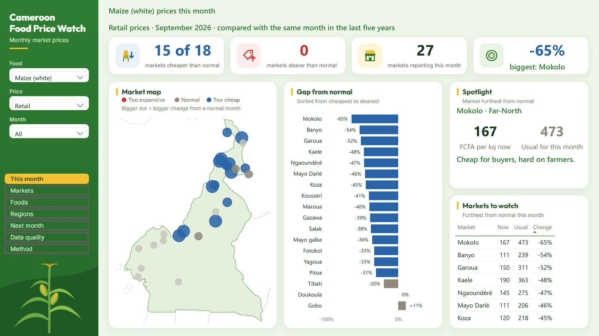
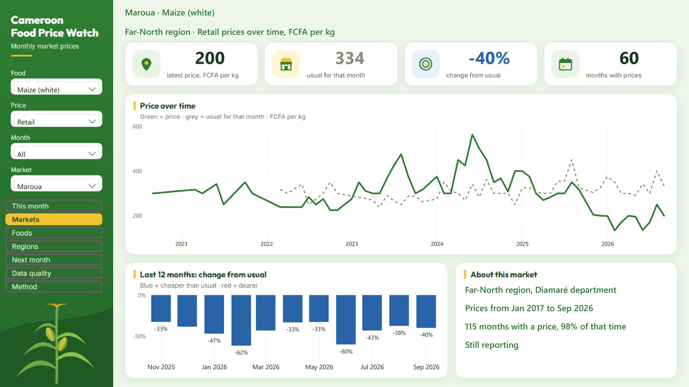
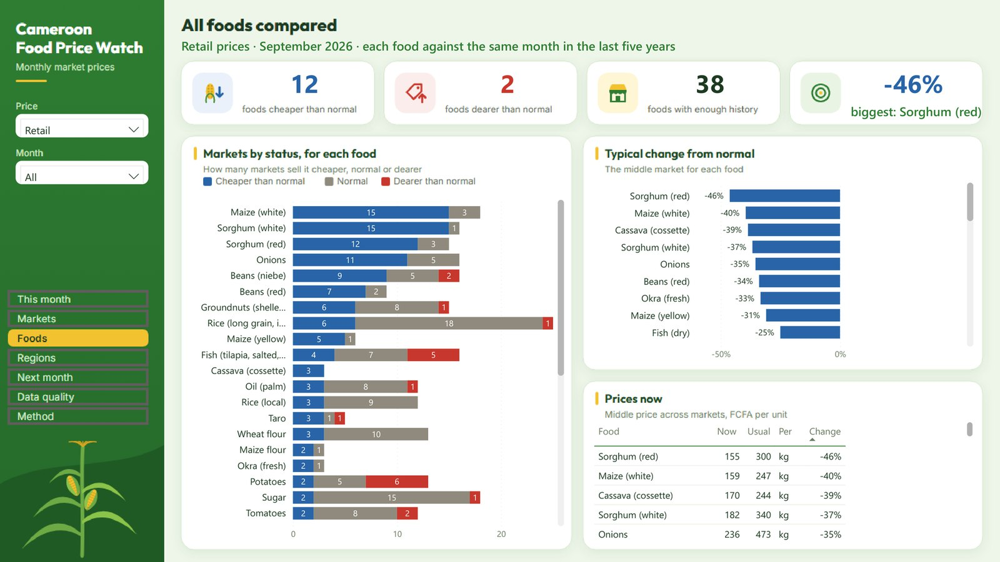
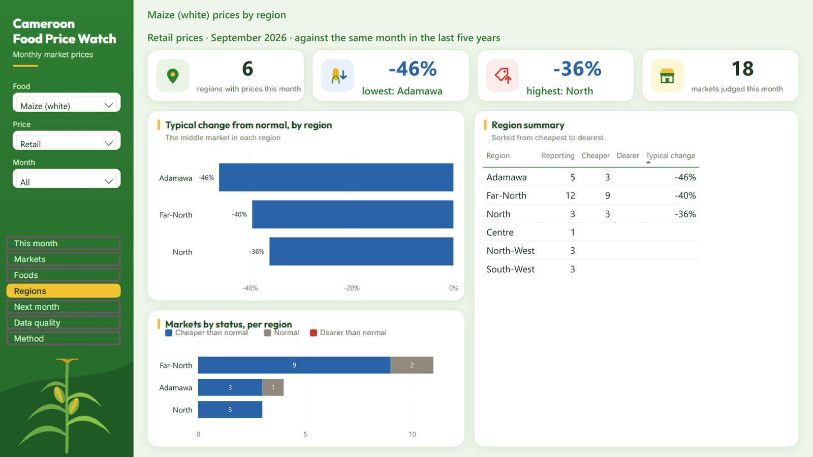
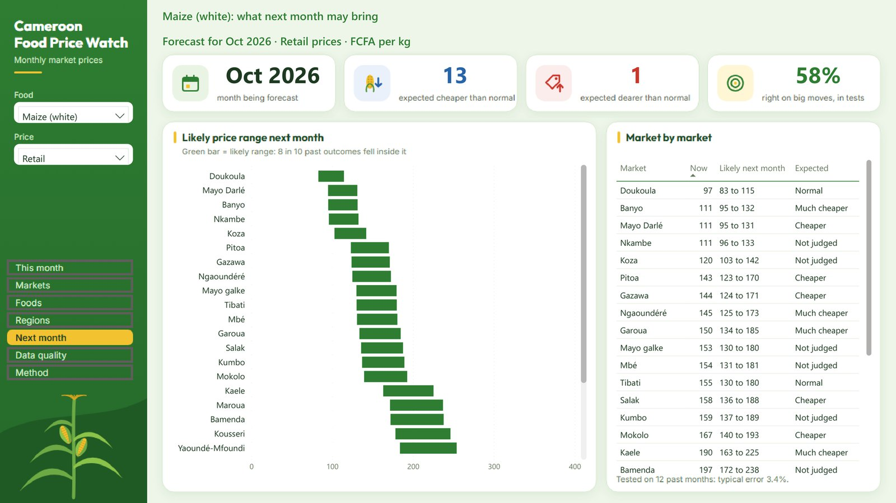
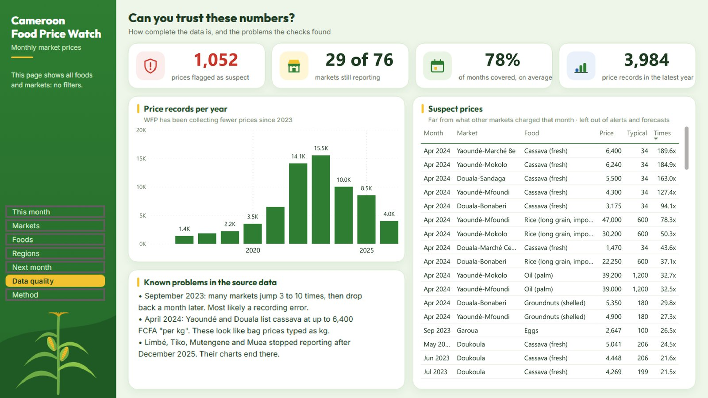
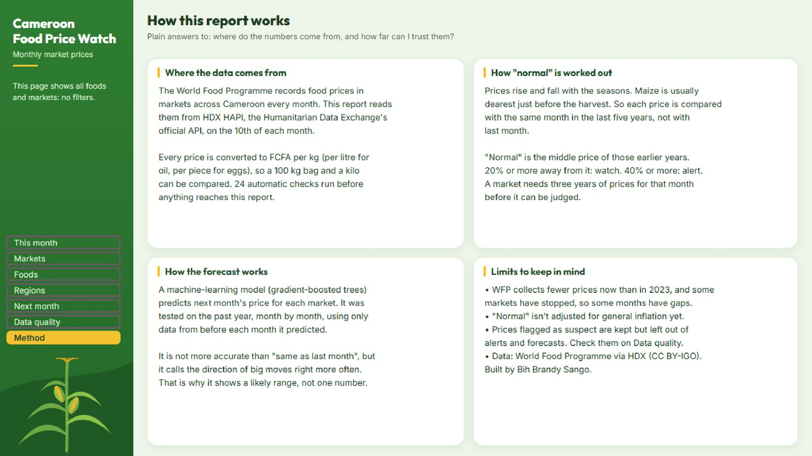

A monthly data pipeline that flags unusual food prices in Cameroon
Python pulls World Food Programme prices for 76 markets from an API. A dbt and DuckDB warehouse cleans them and runs 27 data checks. SQL compares every price with its own seasonal history, and a gradient-boosted model, tested month by month, forecasts the next one. GitHub Actions runs the whole chain on the 10th of every month.
Architecture
Five steps, each a separate file you can run alone. The monthly job stops at the first failed test, so bad data never reaches the report.
Data model
Four layers in the warehouse, each with one job. Row counts are from the latest run.
The code that matters
Three short excerpts from the repository, unedited apart from length.
Paging through the API
The API returns at most 2,000 rows a call. The loop asks for the next page until a short one comes back. Large pages arrived cut off, so every call retries with a growing wait.
while True: params = {"location_code": LOCATION, "limit": PAGE_SIZE, "offset": offset, ...} page = http_get_json(url)["data"] rows.extend(page) if len(page) < PAGE_SIZE: return rows offset += PAGE_SIZE
"Normal" uses earlier years only
Each price is compared with the median for the same market, food and calendar month in the five years before. The join never looks at the same year or later, so an alert only knows what someone knew at the time. A dbt test proves it.
select cur.price_month, median(past.price_per_unit) as normal_price from prices cur join prices past on past.market_code = cur.market_code and past.calendar_month = cur.calendar_month and past.price_year < cur.price_year and past.price_year >= cur.price_year - 5
A backtest that can't see the future
For each of the last 12 months, the model is trained only on rows whose answer was already known, then asked to predict that month. That is how it would have done in real use.
for origin in origins: # only rows whose answer was known train = usable[usable["price_month"] < origin] test = usable[usable["price_month"] == origin] model = new_model().fit(train[FEATURES], train["target_change"]) preds = model.predict(test[FEATURES])
What the model sees
Nine inputs per market, food and month, built in pandas on a complete monthly calendar so "a month ago" really is one month ago. Changes are in logs, so +0.1 means about 10% whatever the price.
FEATURES = [ "lag1_change", "lag2_change", "lag3_change", "last_year_next_change", # same move a year ago "national_change", # median move nationally "target_month", "commodity_code", "region_code", "is_retail"] # HistGradientBoostingRegressor, absolute error
Model evaluation
5,136 test forecasts over October 2025 to September 2026, against two simple guesses. The model doesn't beat "same as last month" on accuracy, because 35% of prices don't change at all. It earns its place on direction: when a price really moved, it called up or down right far more often.
Gold = the model, grey = simple guesses. Scores from the latest monthly run (7 Nov 2026); they shift slightly every month as new data arrives. Full scores: forecast_backtest.json.
Decisions and why
The official API, not scraping
The HDX download link blocks scripts with a bot check. Instead of working around it, the pipeline uses HDX HAPI, the supported route, with an app identifier kept in a GitHub secret.
dbt on DuckDB, not loose pandas scripts
Each step is a tested SQL model with a clear name, so a reviewer can trace any number back to its source. DuckDB needs no server, so the whole warehouse runs on a laptop or in CI.
Median of earlier years, not the average
One extreme year would drag an average. The median of the same month in earlier years keeps the seasons and ignores outliers, and never peeks at later data.
Flag bad prices, don't delete them
1,052 prices are 3 or more times away from the national median. They stay in the warehouse with a flag and their ratio to the national median, but are left out of alerts and forecasts.
A range, not one number
Because the model is no more accurate than a naive guess, the report shows an 80% likely range from the model's own past errors, never a single exact price.
Tests that stop the pipeline
21 pytest tests run before the fetch, and 24 dbt checks run after every build. If one fails, the monthly job stops and nothing is committed.
Blip or real change?
An alert says a price is far from normal, not why. Each flagged price now gets one of four types, using only what was known that month. To check the types, I looked at what happened the following month (used only to check, never to label).
Market-wide shift
This food moved the same way in at least half the markets that could be judged. 3,325 alerts since 2020; only 15% were back to normal a month later. The 2026 maize crash is one: 15 of 18 markets, some low for 9 to 16 months running.
General price shift
Most foods moved the same way that month, a stand-in for inflation. 2,038 alerts, 18% back to normal a month later. All of them fall in 2020 to 2024, peaking in 2023 when food inflation was high.
Local, lasting
Only this market, but off normal three months or more in a row. 347 alerts, 28% back to normal a month later.
Local, new
Only this market, first month or two. 1,490 alerts, and 45% were back to normal a month later: three times the rate of a market-wide shift. A possible one-off blip, local shock or data problem, so it deserves a check before anyone acts.
Rules, not a trained model; the thresholds (half the markets, three months) are set in one config file and three new data checks make sure every flagged price follows them. In September 2026, 93 of the 158 flagged prices are market-wide shifts, 49 local and new, 16 local and lasting.
What the data showed
- Maize is in a price crash. In September 2026, 15 of 18 markets with enough history sold maize well below normal, and none above. Mokolo was 65% below its usual September price.
- The alerts match real events. Retail white maize in Maroua was flagged 65% above normal in the June 2024 lean season and 62% below in the February 2026 crash.
- The source data has errors the checks found. In September 2023 many markets jump 3 to 10 times and drop back a month later. In April 2024 some Yaoundé and Douala cassava prices are bag prices typed in as per kg.
Limitations
- "Normal" isn't adjusted for official inflation yet. The "general price shift" type uses the median move of all foods as a stand-in; Cameroon's consumer price index would be more exact.
- 78% of prices can't be judged yet: a market needs three years of history for that month.
- The suspect check compares markets within a month, so it misses an error that hits every market at once (September 2023). Comparing with each market's previous month would catch it.
- One month is a short horizon; rainfall and exchange-rate data may help.
The output: a Power BI report
The pipeline feeds a seven-page report for non-technical readers, built from code as a Power BI project. Pick a page to jump to it.







Built by Bih Brandy Sango with Python, pandas, NumPy, scikit-learn, dbt, DuckDB, pytest, GitHub Actions and Power BI. Data: World Food Programme via HDX (CC BY-IGO). Code under MIT on GitHub.